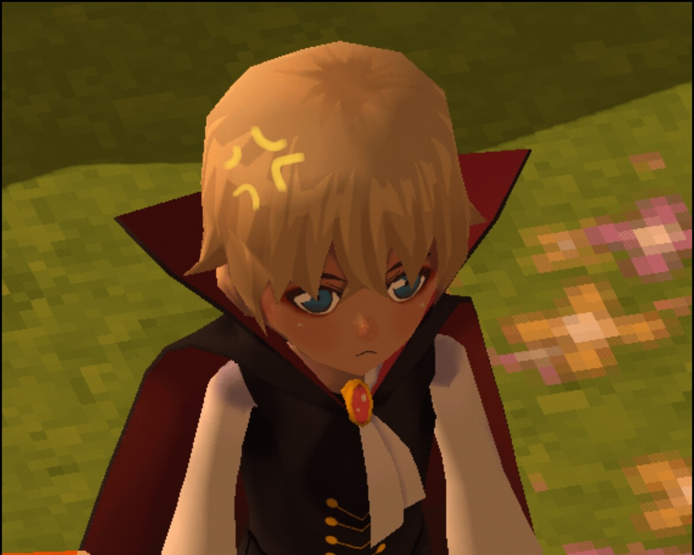

Halloween / 萬聖節篇
今天的白羅咖啡廳格外熱鬧，呼應節慶，店裡佈置得相當有萬聖氣息，今日的客人都必須裝扮才能進到店內。
衝著人氣服務員安室透的吸血鬼裝扮，女性顧客們無不使出渾身解數，各式各樣吸睛打扮就為了得到注意，拜此所賜，今天白羅的營業額數目可觀。
活動結束之後，夜也已經深了，安室獨自一人留下收拾善後，拉下鐵門準備專心收尾工作。
今天每個人都將自己扮得怵目驚心又嚇人，但心情都是愉悅的，要是能一直如此和平就好了呀－－怎麼可能。
若是如此，自己也不必四處奔波了吧。
他靜靜地掃著地，抬頭望向大門，有種預感。
希望趕得上。
赤井秀一在意識到原來今天是萬聖節的時候，月亮都已經高掛空中，盛情裝扮的人們也已踏上歸途。
來到將近午夜，赤井敲敲門，希望這時間閉門深鎖的咖啡廳如他所料，其實裡頭還未結束善後工作：「不給糖就搗蛋。」他說。
「歡迎光臨，渾身上下充滿敷衍的狼人……神父大人？」
開門的是吸血鬼，而吸血鬼會這麼說是有根據的。
打烊時間跑來敲門的這位先生，除了完全沒有易容裝扮之外，頭上戴著狼耳朵，脖子掛著十字架項鍊，其他的，就跟平常沒什麼兩樣，除了黑還是黑，要不是那銀項鍊閃閃發亮，他還真看不出來夜色中還站著一個人。
赤井聳聳肩：「我跟路人要來的。」
聽說白羅沒裝扮不能進去，他才隨手讓自己身上有點過節元素。
安室扳著張臉：「進來吧。」
轉過身，深色斗篷隨之揚起，顯得頗有氣勢。
安室說自己還得清掃，就快結束了，讓赤井自便。
看起來像狼人的神父在店內繞了一圈，大部分的燈都已經熄滅，只剩下靠窗的幾棵南瓜燈，以及頭上一盞昏黃微光。
他坐下，見桌上灑著幾顆糖，便隨手拿起一顆含在嘴裡。
「怎麼？被糖果引來的？還是魔鬼？」
赤井嘴裡的糖已經咬碎，他又拆了棒棒糖刁在嘴裡：「沒有魔鬼，只有吸血鬼。」
「我該怕你嗎？」安室比了比赤井身上的狼耳跟項鍊。
赤井聳聳肩：「狼人、神父，吸血鬼，互相排斥都是成見，我就對你沒意見。」
「但，」他補充：「這棒棒糖的味道有點奇怪，至少我不是被糖果引來的。」
「你選到唯一一顆惡作劇糖。」
赤井看著完成工作坐在對面位置的吸血鬼，看來安室可能對自己這副模樣很滿意，活動都結束一段時間了，直到現在才慢慢卸下配件。
怪異說不出味道的糖在他嘴裡融化，索性抽出來，扔進垃圾桶。
安室的側臉被南瓜燈照著，他脫下手套，解開披風，隨性撥撥瀏海，他隨便一笑都是吸血鬼的邪惡模樣。
「怎麼，沒看過吸血鬼？」
「是沒看過。」
「其實你不打扮也可以，畢竟本身就是『亡靈』，這的確是個你不需要扮成誰就能大方走在街上的好日子。」
月光輕輕灑落只有兩人的白羅，跟著暖黃燈光一起映照在臉上，鮮有的寧靜時光讓一向話少的赤井忽然想聊點什麼。
「我想起一個傳說，聽說狼人和吸血鬼也曾經結盟。」
「為了什麼？」
「『銀色子彈』。」
「你尿褲子時聽的床邊故事？」
「大概吧。」赤井沒有駁回安室的玩笑。「其實記得不是很清楚，兩族的首領達成了共識，一同殲滅使用『銀色子彈』作惡的壞人，並得到彼此想要的，是個不太主流的童話？」
「因為都是各取所需，沒有什麼太偉大的志向吧。」
「我想那或許是個愛情故事。」
「你還是閉嘴吧……」
他們沒有久待，走出店外，赤井第一件事就是從口袋摸出火柴盒迅速點燃一根菸。
一方面是他不想再吃糖忍耐，另一方面——
「如你所言，今天是亡靈的節日，寬待我一點如何？」
「隨便你，樓上住了敏感的小子，還是勸你趕快離開。」
「嚯，就那麼怕被發現在約會嗎？」
安室後悔了，他不該不理會赤井提出要接他下班的提議，當時沒有拒絕也沒有答應，百分之百被默認是接受。
他奪過赤井手上的菸，自己抽了一大口，隨後捻熄扔回原主人身上。
「我難得坐你的車，快點。」頭髮有點亂的吸血鬼惡狠狠咧開獠牙瞪著四不像狼人。
赤井駕著SUBARU360，途中他又想起了些關於「銀色子彈」故事的細節。
「那則故事有些地方使我印象深刻。」不知何時赤井的嘴又刁上新的煙頭。「狼人跟吸血鬼之間其實有著很深的誤會，他們各懷鬼胎，卻還是走到了一起，並且深深被彼此吸引，旅途中遇到了困難也幾乎是一起解決，信任與不信任成正比，小時候的我覺得挺困惑的。」
「那也就是兩個沒定力的傢伙，走投無路產生了吊橋效應吧。」
「也許吧，所以我才說比起童話，這倒更像愛情故事，從互相懷疑到互助，可到了最後，誰也沒真正放下戒心，總是提心吊膽的。」
安室透越聽越煩躁，這到底哪門子奇怪的故事？誰家父母會給小孩唸這種毫無勵志性質的故事？噢，畢竟是赤井秀一，那也能理解了。
「夠了，我不想再聽神父大人的故事了。」安室作勢求饒。
「噢，故事裡也有神父……」
「閉嘴。」
「看來你並不喜歡聽愛情故事？」
「你還遠遠不夠了解我呢。」
赤井忍著別讓自己的目光停留在安室臉上太久，否則很容易就會被那吸血鬼臉龐給吸引住。
真的很適合啊……。他想。
安室的公寓快到了，赤井在幾個路口前停下車。
「走了，今天謝啦。」安室手上掛著黑色大披風，卸下安全帶準備離去。
「安室君。」
「？」
「不給糖就搗蛋。」
赤井面無表情，但整個人就像是不給點什麼他可真就要搗蛋的賴皮態度。
「那你就搗蛋吧，再見。」
手腕被捉回去，轉頭，安室對上赤井如鷹的銳利眼神。
吃糖，還是搗蛋？
安室似乎看見那對狼耳朵在閃動，可能是太累的錯覺，赤井沒有任何停留的時間，一把就壓著安室的後腦吻上那雙被塗得鮮豔的唇，舔舔那顆笑起來格外挑釁的小獠牙。
「你這是在犯罪還是攻擊呀......神父？」安室撥了撥掛在赤井胸前的十字架。
話才剛落，就又被堵了回去，打從見到安室這身裝扮開始，他就忍了很久了。
吻得一蹋糊塗，原本就已經掉得差不多的吸血鬼妝，被赤井一搞，嘴唇估計看起來更像吸血鬼了。
「現在是狼人在搗蛋。」
ーー「吸血鬼族面臨巨大危機……」
ーー「在這之前，吸血鬼王啊，托你的福，現在我有一件案件需要解決，你能當我的協力者嗎？」
ーー「那，你不想為敵的另一人是誰呢？」
ーー「也是會有懷著大愛之心的教徒，願意獻出己身鮮血作為需要之人的食糧。世界上所有種族，切開皮膚，血液都是一樣的紅色，搞不好還留著相同源頭的血脈呢。」
一場意外、一本染血日記、一發銀色子彈，森林裡風聲鶴唳，夜色中伺機而動的，是隻身想替族人討伐的吸血鬼王和他的神祕小夥伴.....以及？
-
詛咒般的命中注定 我想和你有段故事
2021 即將揭曉